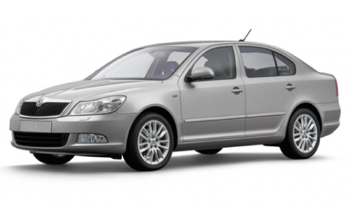
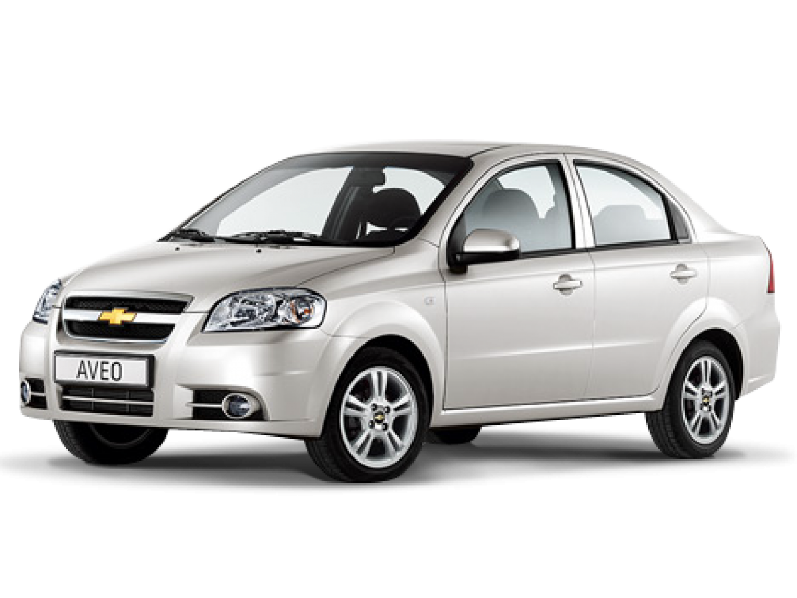

Skoda Octavia
Подробнее

Однажды ранним утром Skoda Octavia, Renault Logan, Chevrolet Aveo и Нива собрались на стоянке возле гаража. Они были машинами друзей, которые часто ездили вместе на природу. Но сегодня водителей не было: друзья задержались на завтрак. Машины решили не ждать и отправились в путешествие самостоятельно. Загадочная встреча Skoda Octavia, как самая элегантная и аккуратная, возглавила колонну. – Мы поедем по шоссе, чтобы избежать грязи, – предложила она. – Какая грязь?! Грязь – это жизнь! – возразила Нива 2131 и мощно взревела двигателем. – Не ссорьтесь, друзья, – мягко вставил Renault Logan, – главное, чтобы всем было удобно. Chevrolet Aveo, которая любила шутить, произнесла: – Давайте съедем с дороги и найдем приключения, а то слишком скучно. Путешествие в лес Не успели машины проехать пару километров, как Aveo заметила тропинку, ведущую в лес. Она свернула, и остальным пришлось следовать за ней. Нива радостно врезалась в грязную лужу, а Octavia чуть не лишилась блеска своих боков. – Кто вообще ездит сюда без водителей? – возмущалась Skoda, аккуратно объезжая ветки. Но тут машины услышали странные звуки. Из леса раздавался рев моторов. Это оказались старые мотоциклы, забытые временем, которые решили устроить гонку. Гонки в лесу – Давайте покажем этим мотоциклам, что мы умеем! – предложила Нива и первой устремилась вперед. Мотоциклы смеялись, но скоро осознали, что догнать Ниву на пересеченной местности невозможно. Skoda обогнала всех на прямом участке, показав свою скорость, а Logan плавно объезжал препятствия, набирая очки за аккуратность. Aveo, конечно, не могла остаться в стороне: она так резво маневрировала, что мотоциклы едва успевали увернуться. Возвращение домой После веселых гонок машины остановились у озера. Каждая наслаждалась отдыхом: Нива радовалась грязи, Octavia любовалась своим отражением в воде, а Logan и Aveo устроили небольшой дрифт на сухой земле. – Это было круто! – сказал Renault. – Но давайте вернемся, пока нас не начали искать. Когда друзья вышли из дома, они обнаружили свои машины припаркованными, но слегка грязными и очень довольными. – Удивительно, как они здесь оказались? – задумчиво спросил один из друзей. Машины лишь тихо мурлыкали двигателями, довольные своим приключением.